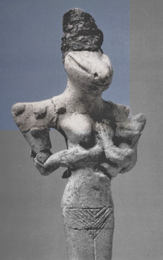

When gods first appeared and how long they endured across different cultures
Duration of worship (years)
3,500
3,000
2,500
2,000
1,500
1,000
500
3500 BCE
3000 BCE
2500 BCE
2000 BCE
1500 BCE
1000 BCE
500 BCE
0
500 CE
3500 BCE First large scale cities
2600 BCE Great Pyramid of Giza built
1800 BCE Early Israelite traditions
800 BCE Greek city-states emerge
1st century CE Christianity begins
622 CE Rise of Islam

One of the earliest recorded deities, Nammu represents primordial creation, appearing before structured pantheons and reflecting the earliest stages of religious thought.
Among the longest-lasting deities (~3600 years), Anu appears at the very beginning of Mesopotamian religion. Despite this span, he remained a distant sky authority, rarely the focus of direct worship.
A god of wisdom and water who endures across the entire timeline. Unlike many deities of power, Enki is known for outsmarting chaos - often saving humanity through clever intervention rather than force.
A relatively late-emerging deity, Marduk rises rapidly to dominance during the Old Babylonian period. His elevation reflects Babylon’s political power, eventually positioning him as the central god of a reorganized pantheon, absorbing roles once held by earlier deities.
A Hurrian storm god who rises with the Hittite world. His myths center on battles for control, but unlike earlier gods, his worship remains tied to specific kingdoms and fades with them.
Place of origin